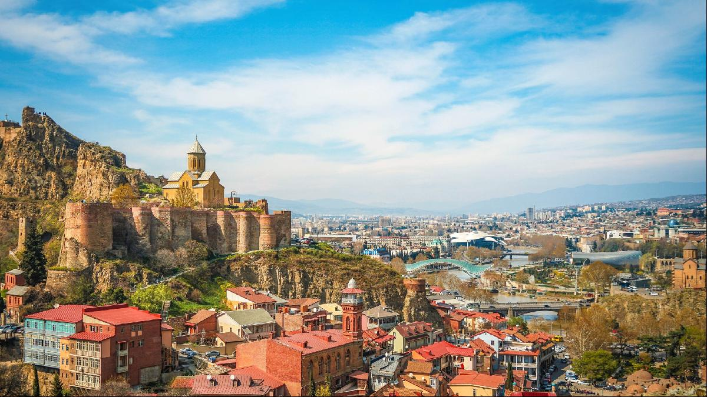

Places to visit, things to do
I love to travel. But of all my destinations, one place has stood out. The Caucasus is an area between the Black and the Caspian Sea. So far I have visited Armenia and Georgia, but soon I will add Azerbaijan to that list. Below are some great places to visit and things do while in Georgia and Armenia.
Georgia
Tblissi

Tblissi is the capital city of Georgia and it might be my favourite city in the world. It's an ancient city with amazing monuments, great views and superb restaurants.
Stalin museum
One of the most surreal experiences of my life. This museum of tries to tell the story of their favorite resident: Joseph Stalin. The museum glorifies the life of the famous dictator. Highlights are the traincart Stalin used because of his fear of flying, and his birth house which has been placed in some kind of shrine.